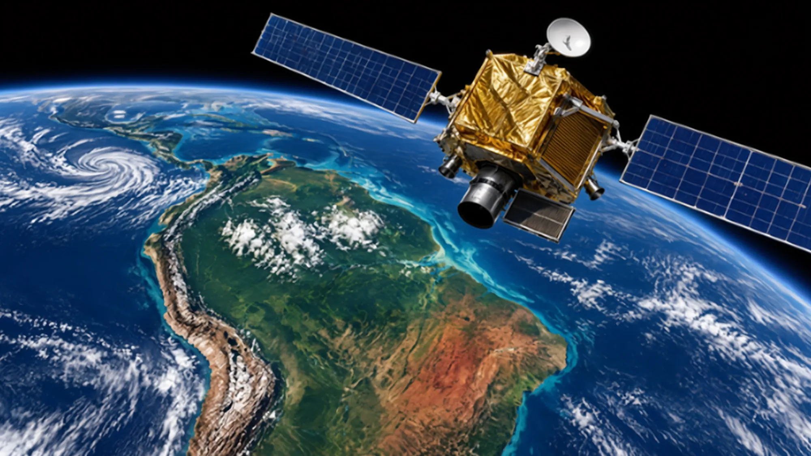
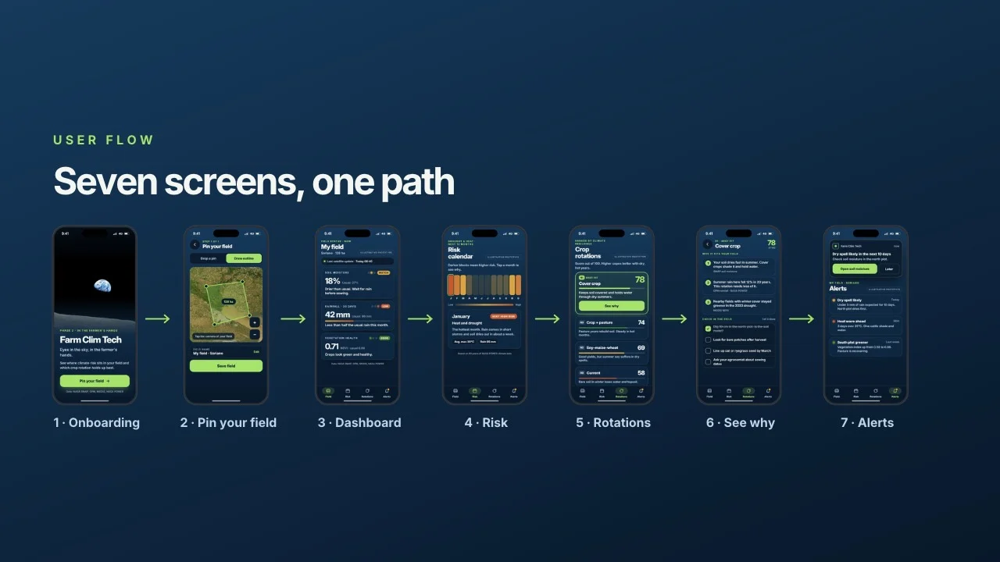
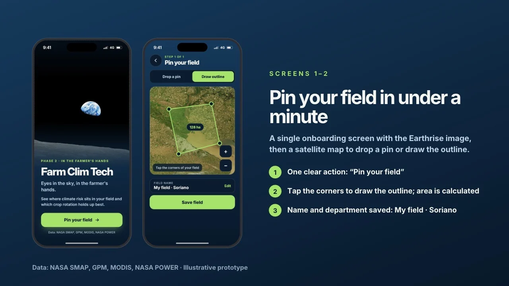
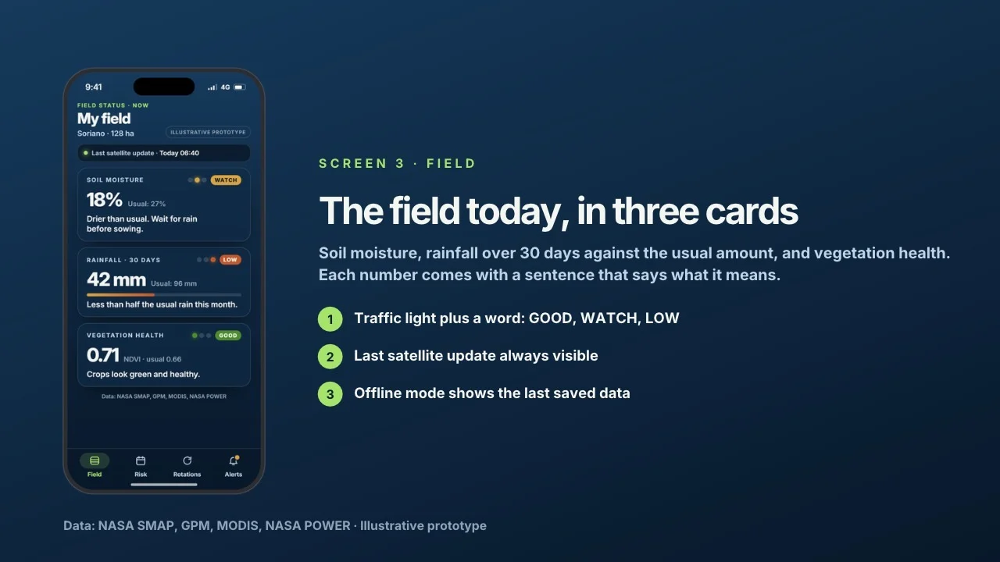
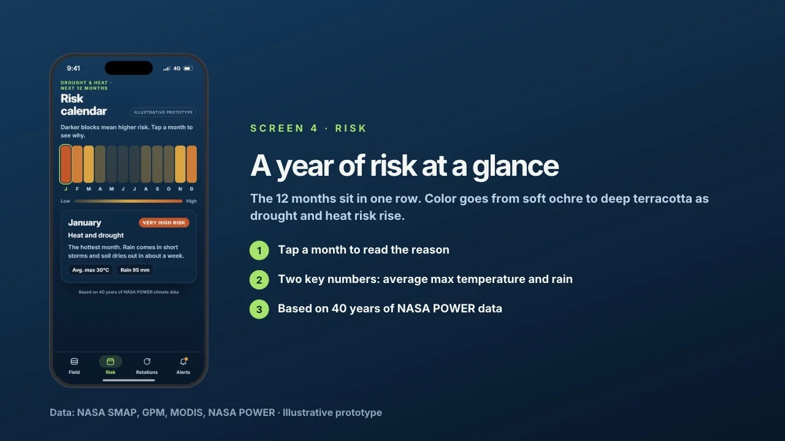
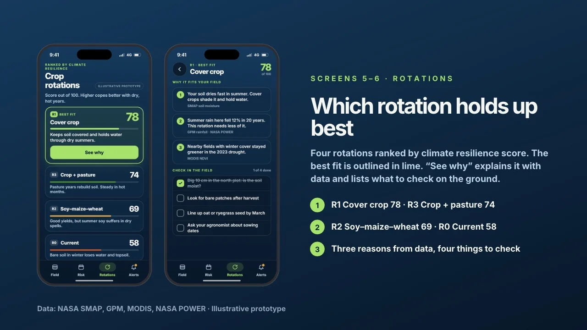
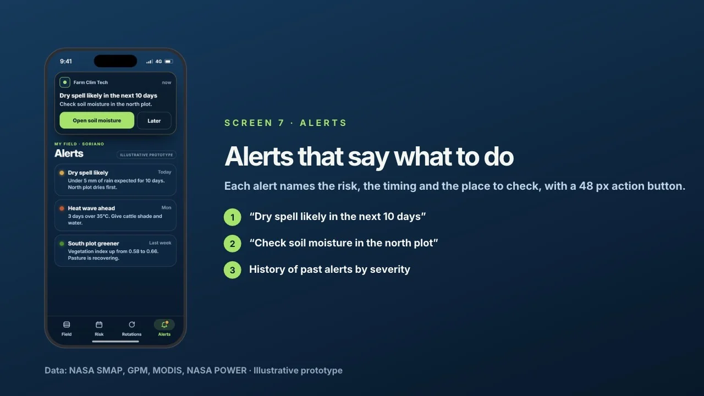
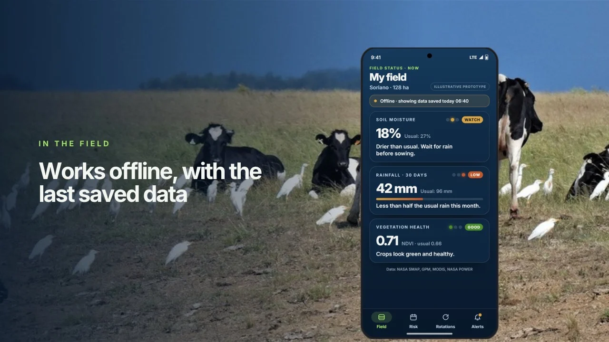
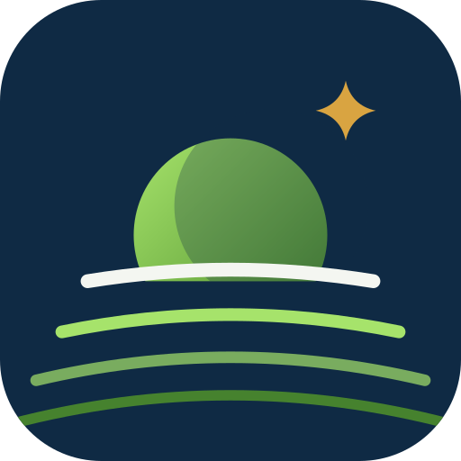

Farm Clim Tech turns public NASA Earth-observation data into two simple answers for every field: where the climate risk is, and which crop rotation holds up best.
On December 24, 1968, Apollo 8 looked back and saw our fragile planet for the first time. Since then, the eyes in the sky never closed. We put them in the farmer's hands.
Uruguay produces food for about ten times its own population. When drought hits, it is not only a local loss: it shakes one of the stable suppliers that global food security relies on.
Where is the climate risk in my field, and which crop rotation suits it best? Built for Uruguayan farmers aged 35 to 65 who check their phone in full sun, sometimes with weak signal.

How wet the soil is right now.
Last 30 days against the historical average.
How green and healthy the crop is.
40 years of heat and rain to rank risk.
Pin your field, see its condition today, read a year of risk at a glance, compare four crop rotations and get alerts that say what to do.







NASA satellites watch soil, rain, vegetation and climate every day, for free and for everyone.
That data becomes a simple app: risk on the map, the best rotation and alerts that say what to check.
Uruguay first, then the Pampas, then the world: any farm with a phone can use the same open data.

Los ojos del cielo, en manos del agricultor.